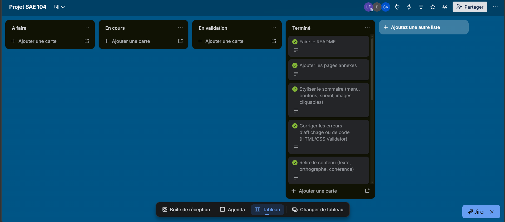
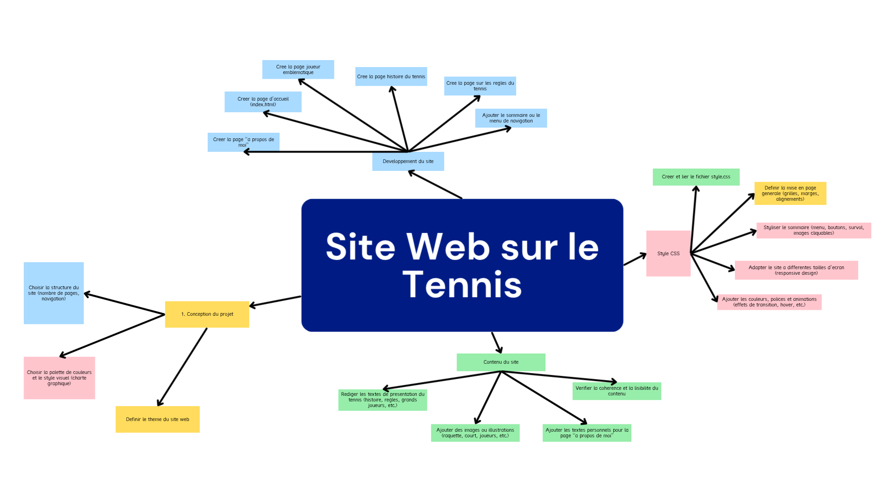

Présentation
Résumé
Conception et développement d'un site internet complet en HTML/CSS sur l'une de mes passions : le tennis. Gestion du versionnement avec Git et GitHub, organisation du code source et déploiement. Mise en place d'un tableau Trello pour une gestion de projet optimale.
Contexte & Méthode
Projet individuel RT3 visant à mettre en pratique les compétences web acquises en cours. Le sujet était libre, j'ai choisi de créer un site autour du tennis.
Maquettage préalable sur papier, puis intégration HTML/CSS responsive. Utilisation de Git pour versionner le code tout au long du développement et hébergement sur GitHub Pages. Utilisation de Trello pour la planification et le suivi du projet.
Résultats & Bilan
Site complet et visuellement soigné. Bonne pratique du versionnement Git. Code propre et commenté. Bonne gestion du projet avec les délais respectés.
Le site gagnerait à intégrer du JavaScript pour le rendre plus interactif. Cette compétence n'étant abordée qu'au deuxième semestre, elle constituera une évolution naturelle du projet.
Galerie photos & captures


Fichiers du projet
Voici un lien pour accéder au projet site web : Voir le site web